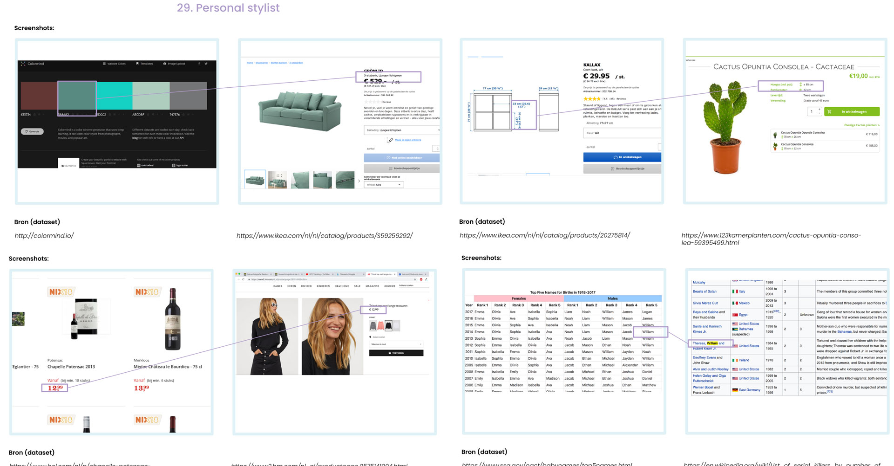
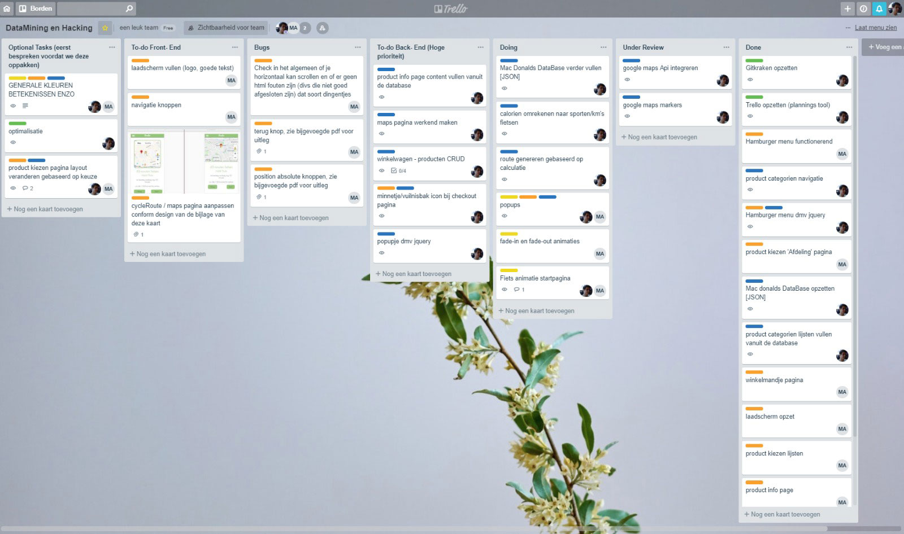
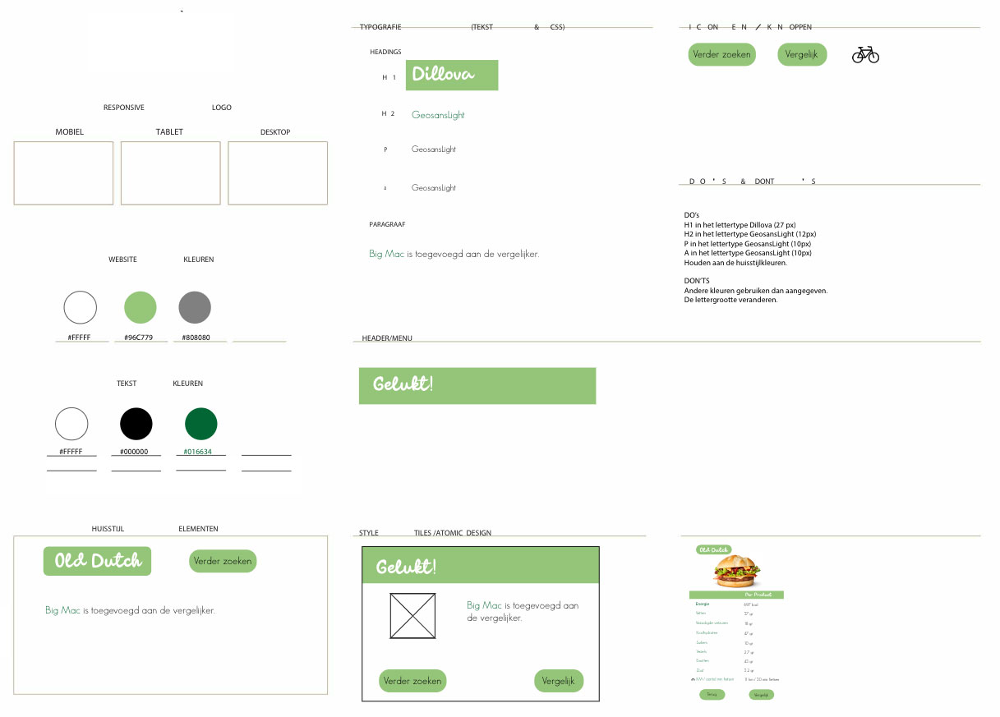
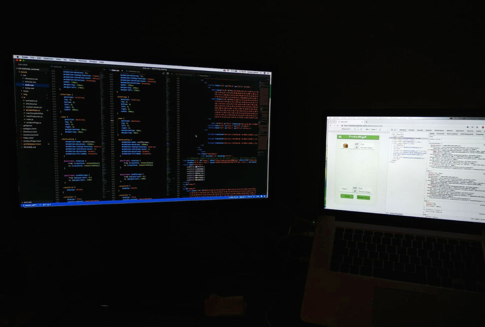
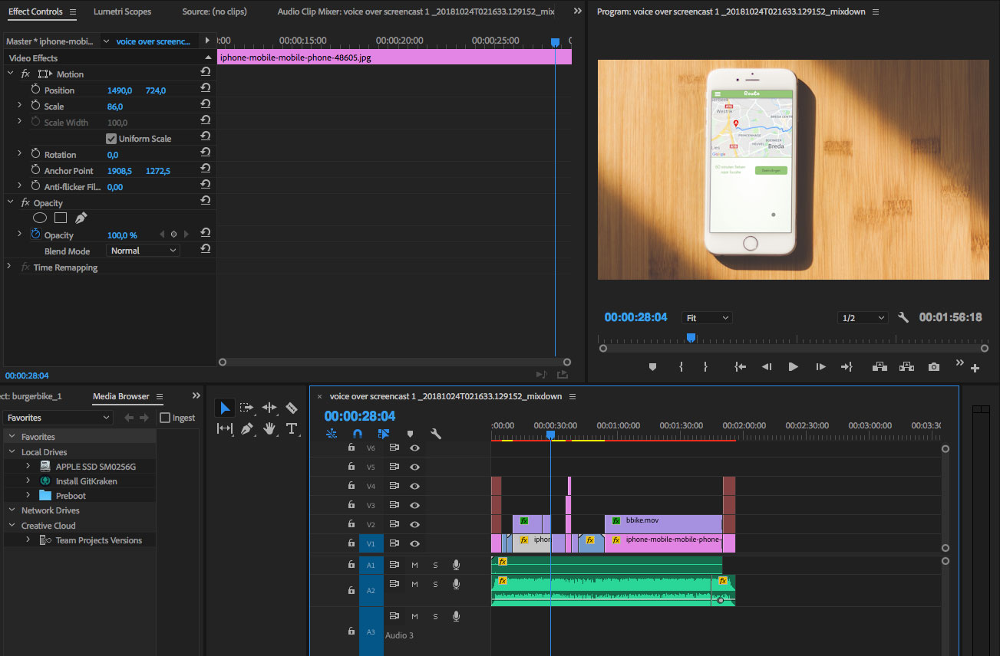

Brief / Combine two online databases to create a meaningful application
Agency / Avans University Breda
My roles / Concept design, front-end development, video editor
Team / Charelle, Evelien, Jordey
After managing to live a healthy lifestyle for a few months, you suddenly get a huge junk food craving. You’ve had four salads this week, so it’s okay.. Right? Taking a break with one ‘bad meal’ can feel like failure, but what if there was a way to not feel any guilt about it?
Burgerbike calculates a cycling route from your home to the fast food restaurant, so you’ll be able to work off the calories before or after enjoying the meal. Simply fill in your gender and weight, add the products you want to eat and the a route is generated.
If the distance is unrealistically far due to too many calories, the app will show what else you have to do in order to balance those out
Matching Databases
The process began with finding existing databases and make random pairs. With these connections we started
brainstorming on the relation between these databases and if it could be translated into a meaningful application.
Many strange ideas came out, until we came across one where we connected cycle routes with the McDonalds database.


Tasks
Within our team each of us had a different role: UX-designer, UI-designer, back-end developer and me as the
front-end developer. Working closely together, we could talk over choices that were made. With Trello we
maintained an accessible planning and to do list.
UX- & UI-Design
By using green as our main color we could give BurgerBike a healthy look and feel,
to stand out to our target audience. Wireframes were used to design the easiest way to navigate through our app.


Development
Using html, CSS and Javascript I developed the front-end of BurgerBike, while another team member dived into the back-end.
With example pages from the UI-designer I could recreate these with code, while discussing feedback to improve the design at the same time.
Videos
To explain our application and concept for BurgerBike, I made two videos.
One with information for users, and one to show the process in development.
